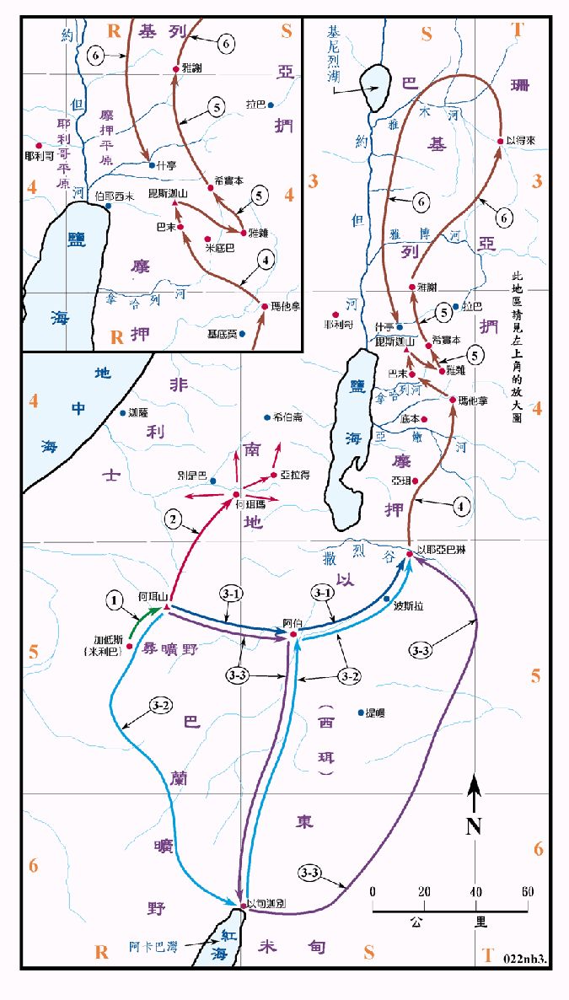

1407BC

行动线说明
| 序号 | 圣经 | 说明 |
|---|---|---|
| 民20:1-13 | 结束飘汤，起行到了加低斯。 | |
| 民20:14-21 | 摩西派使者去见以东王，要求从以东经过，但以东王不许，於是他们转去离开他。 | |
| 1 | 民20:22 | 从加低斯起行，到了何珥山，亚伦去世。 |
| 2 | 民21:1-3，33:40 | 迦南人攻击以色列人，但为以色列人所击败。 |
| 民21:4-9 | 他们从何珥山起行，往红海那条路走，要绕过以东地，百姓又起怨言。 | |
| 3 | 民21:10 | 他们经阿伯、以耶亚巴琳，安营在撒烈谷，这段路程可能有三种不同的路线，现用3-1表示向东直接穿过以东，3-2表示先向南到以旬迦别，再去阿伯；3-3表示向东到了阿伯，然后转南到以旬迦别，再去撒烈谷。 |
| 4 | 民21:13-20 | 再过亚嫩河，经亚珥、玛他拿、拿哈列、巴末、摩押地的谷，就到了 斯迦的山顶。 |
| 5 | 民21:21-32 | 击败住西实本的亚摩利王西宏，夺取了他的城邑。 |
| 6 | 民21:33-22:1 | 在以得来击败巴珊的王噩，夺取了他的土地。然后南返，安营在摩押平原。 |
卅八年之后，他们结束了在旷野中的飘流，以色列人到了何珥山，住南地的亚拉得王就来攻击他们，但被击败，然而以色列人并没有乘胜追击，也没有从南地进入迦南。
本段经文中并没有记载四十年中飘流的路程，直到第二十章说到了加低斯，才开始了进迦南的行程，旅途中前段的安营处计有何珥山、阿伯、以耶亚巴琳、撒烈谷等，其位置尚未能得到全然的肯定。尤其是阿伯一地，虽然其位置经考证无误，但因位於以东的中心，与所述以东王不允许以色列人经过以东，以色列只得转去离开，而最后是绕过以东的属地有所不符，所以这一段路程有几种不同的说法：最直接的是从何珥山向东到阿伯，再向东北行到以耶亚巴琳；另一条是自何珥山向南，绕过以东的西南到阿卡巴湾后，再沿亚拉巴谷北上到阿伯，再去以耶亚巴琳。第三条则是自何珥山直接到阿伯，再往南沿亚拉巴谷南下到阿卡巴湾，然后绕过以东的东南到撒烈溪后再到以耶亚巴琳。在图中各以3-1、3-2及3-3来分别表示。
到了以耶亚巴琳之后，进迦南的路线相当的明确，包括征服亚摩利人的两个王的领土，直到巴珊后再折返摩押平原。
当以色列人在旷野之时 (1446～1407BC)，法老王是杜得模西士四世 (1424～1414BC)，他建了狮身人面兽的大雕像，并与美坦尼的公主联姻。随后的亚门侯提三世 (1414～1378BC) 他觉得不需要再靠远征来巩固国力，因而转向追求享乐，生活奢侈，推展前所未有、大规模建计划，因而逐渐松弛了对外的控制，有利於以色列人进迦南的征服行动。